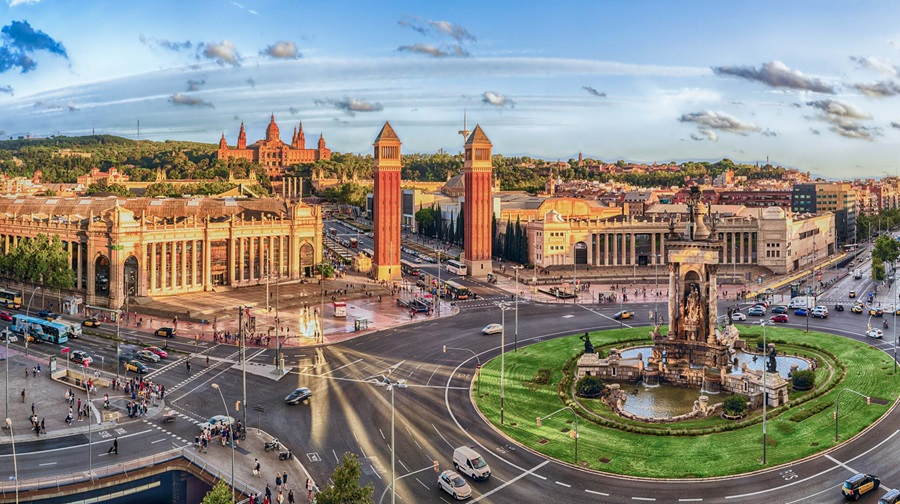
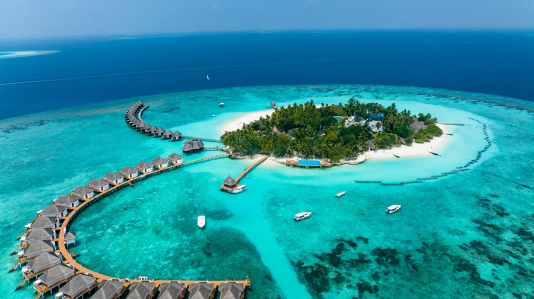

Exploring the Vibrant Culture of Barcelona
Barcelona, Spain | Travel Date: June 2024
Discover the unique blend of Catalan culture, art, and architecture in Barcelona, from Gaudí’s masterpieces to the lively streets of Las Ramblas.

Barcelona is a city full of life, art, and vibrant energy. Begin your journey by visiting Antoni Gaudí's architectural wonders, like the iconic Sagrada Familia and the colorful Park Güell. Barcelona's Gothic Quarter takes you back in time with its narrow medieval streets and charming squares, while the lively atmosphere of Las Ramblas offers endless shopping and entertainment options.
Food lovers will relish the local Catalan cuisine, from tapas to paella, in the city’s bustling markets and quaint cafes. With a coastline stretching along the Mediterranean Sea, Barcelona also offers beautiful beaches where you can unwind. A trip to Barcelona promises a captivating blend of history, culture, and coastal beauty.
Read Full Article
Experiencing Paradise on the Maldives
Maldives | Travel Date: July 2024
Relax in a tropical paradise with crystal-clear waters, pristine beaches, and luxury resorts in the Maldives. Perfect for diving, snorkeling, and ultimate relaxation.

The Maldives is a dream destination for those seeking sun, sea, and sand. Known for its turquoise waters and white sandy beaches, it’s the perfect spot for relaxation and water activities. Explore vibrant coral reefs and encounter diverse marine life while diving or snorkeling in some of the world’s clearest waters.
Stay in an overwater villa for an unforgettable experience, where you can step directly into the ocean from your room. In the evenings, enjoy a stunning sunset as you savor fresh seafood. The Maldives offers an unparalleled escape for those in search of tranquility and natural beauty.
Read Full Article
Uncovering the Ancient Wonders of Rome
Rome, Italy | Travel Date: August 2024
Step into history in Rome, a city filled with ancient ruins, magnificent art, and Italian charm. Explore landmarks such as the Colosseum and Vatican City.

Rome, also known as "The Eternal City," is a treasure trove of history and art. Begin your adventure with a visit to the iconic Colosseum and the Roman Forum, where you can imagine life in ancient Rome. Take a stroll through Vatican City to marvel at St. Peter’s Basilica and the breathtaking Sistine Chapel.
Indulge in authentic Italian cuisine, from pasta and pizza to refreshing gelato. Wander through the charming streets of Trastevere, a vibrant neighborhood known for its cozy cafes and artistic vibe. A journey to Rome offers an unforgettable blend of ancient wonders and modern delights.
Read Full Article
Adventure and Scenic Views in Sydney
Sydney, Australia | Travel Date: September 2024
Experience the beauty and excitement of Sydney, from its iconic Opera House to the scenic beaches and national parks surrounding the city.

Sydney is a city that blends urban sophistication with natural beauty. Start by visiting the famous Sydney Opera House and taking a stroll along the picturesque Sydney Harbour. For stunning views, climb the Sydney Harbour Bridge or take a ferry to Manly Beach for a relaxed seaside vibe.
Nature lovers can explore the nearby Blue Mountains, known for its dramatic cliffs and eucalyptus forests. Sydney also offers a thriving food scene, from fine dining to local seafood markets. With its blend of city attractions and outdoor adventures, Sydney is a destination that has something for everyone.
Read Full Article
Embracing Island Life in Hawaii
Hawaii, USA | Travel Date: October 2024
Experience the natural beauty and vibrant culture of Hawaii, from volcanic landscapes to tropical beaches. Enjoy surfing, hiking, and the aloha spirit.

Hawaii offers a unique mix of stunning landscapes and rich Polynesian culture. Start your adventure by exploring Hawaii Volcanoes National Park, where you can witness active lava flows and hike through unique volcanic terrain. For beach lovers, Hawaii’s islands are home to some of the world’s best surfing and snorkeling spots.
Embrace the aloha spirit as you enjoy a traditional Hawaiian luau, complete with hula dancing and delicious local cuisine. With its waterfalls, tropical forests, and vibrant local culture, Hawaii promises an unforgettable island experience.
Read Full Article